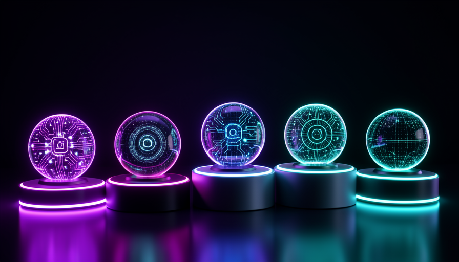

💡 ¿Eres nuevo aquí? Tres palabras antes de empezar
- Sistema agéntico — un conjunto listo de «Jarvis»: cerebro + memoria + skills ya configurados, que solo tienes que configurar.
- Autohospedado — «alojado por ti»: funciona en tu computadora o en tu servidor, en vez de en un sitio de terceros.
- Docker — una forma de «empaquetar» un programa para que funcione igual en cualquier computadora, sin complicaciones de instalación.
🧱 Sistemas agénticos listos: qué son
En el módulo 3.1 viste que un Jarvis tiene cuatro piezas: cerebro, memoria, skills y disparadores. Montar todo esto a mano lleva trabajo. La buena noticia: otras personas ya montaron y lo dejaron listo para que lo uses. Estos kits son los sistemas agénticos listos.
Piensa en un departamento: puedes comprar el terreno y construir ladrillo por ladrillo, o conseguir un departamento amueblado y solo ajustar la decoración. Un sistema agéntico listo es como un departamento amueblado: las paredes ya están levantadas; tú solo configuras lo que es tuyo.
🔑 La idea central
La diferencia entre construir e configurar:
- •Desde cero: más control, más tiempo, más cosas que pueden fallar.
- •Listo: empieza rápido, intercambia un poco de control por velocidad.
✓ Cuándo usar uno ya hecho
- ✓Quieres resultados rápidos, no un proyecto
- ✓Tus necesidades son comunes (responder, recordar, agendar)
- ✓Hay un curso de INEMA que enseña ese sistema
✗ Cuándo crear uno desde cero
- ✗Necesitas algo muy específico o inusual
- ✗El control total importa más que la velocidad
- ✗Quieres aprender cómo funciona cada pieza por dentro
Conceptos clave
🪶 Hermes (Nous Research): IA abierta para crear asistentes
O Hermes es una familia de modelos de IA abierta, creada por la Nous Research. «Abierta» quiere decir que es pública y puedes ejecutar tu propia copia, incluso en tu propio servidor (self-hosted). Es una de las bases más usadas por quienes quieren un Jarvis que no dependa de una sola empresa.
Piensa en Hermes como el motor del auto. No es el auto entero: es la pieza que piensa y responde. A su alrededor montas la memoria, las skills y los disparadores. Es una excelente opción para quienes valoran la privacidad y el control.
🎓 Profundiza en estos cursos de INEMA
Este módulo es solo una vista general. Para crear de verdad un asistente con Hermes, INEMA tiene dos cursos dedicados:
- •Hermes 21C — el curso básico sobre el modelo Hermes y cómo empezar.
- •Agente Hermes — cómo convertir Hermes en un agente que ejecuta tareas.
💡 Consejo práctico
Si la «privacidad» y «ejecutarlo en mi máquina» son importantes para ti, Hermes suele ser el punto de partida. Empieza por Hermes 21C antes del Agente Hermes: uno es la base del otro.
Conceptos clave
🐾 OpenClaw: asistente autónomo multicanal
O OpenClaw es un asistente de IA autónomo e multicanal. Autónomo: no se queda esperando órdenes; toma la iniciativa para cumplir una tarea. Multicanal: te comunicas con él desde distintos lugares (mensajes, correo electrónico, etc.), y no solo desde una pantallita. Suele funcionar mediante Docker, esa forma de empaquetarlo todo para instalarlo fácilmente.
Si Hermes es el motor, OpenClaw se parece más al coche montado: ya viene con la parte de «atender en varios canales» resuelta. Es una buena opción cuando quieres un Jarvis que converse contigo donde ya estás.
🎓 Profundiza en este curso de INEMA
Aquí solo tienes una visión general. Para poner OpenClaw en marcha en la práctica, con Docker y todo, sigue:
- •Docker OpenClaw — el curso de INEMA que enseña a instalar OpenClaw con Docker, paso a paso.
💡 Consejo práctico
"Docker" asusta de lejos, pero el curso Docker OpenClaw te trata como principiante: es más «copiar, pegar y ejecutar» que programar. Si tu objetivo es hablar con Jarvis desde el celular, este es el camino.
Conceptos clave
🗺️ Otros caminos: el panorama
Hermes y OpenClaw son dos caminos con un curso de INEMA, pero el territorio es más amplio. Hay otras formas de tener un Jarvis, y el objetivo aquí no es memorizar nombres, sino reconocer tú las familias y no asustarte cuando oigas hablar de ellas.

🪶 Modelos abiertos (como Hermes)
IA pública que puedes ejecutar por tu cuenta. Más control y privacidad; requiere un poco más de trabajo manual.
🐾 Asistentes listos para usar (tipo OpenClaw)
Kits que ya resuelven canales y automatización. Empiezas rápido y cedes un poco de control a cambio de conveniencia.
☁️ Plataformas de nube
Servicios que alojan Jarvis por ti. Son los más fáciles para empezar; ofrecen menos privacidad y tienen un costo recurrente.
🧩 Armar desde cero VISTO EN 3.1
Las cuatro piezas al alcance. Máximo control, más trabajo: ideal para quien quiere aprender cómo funciona por dentro.
🎯 El patrón que debes detectar
Todos estos caminos son las mismas cuatro piezas armados de distintas maneras. Quien entendió el módulo 3.1 ya entiende cualquier sistema nuevo: solo tiene que preguntar «¿dónde están el cerebro, la memoria, las skills y los disparadores?».
Conceptos clave
⚖️ Cómo elegir el tuyo
No existe «el mejor sistema»; existe el mejor para ti. La elección surge de cuatro preguntas sencillas sobre lo que necesitas: privacidad, canales, facilidad y costo. Responde estas cuatro y casi podrás elegir el camino sin ayuda.
Cuidado con una trampa: la tentación de querer «lo más poderoso». Lo más poderoso suele ser lo que más trabajo da. Para empezar, la facilidad vence a la potencia casi siempre.
✓ Buenos criterios de selección
- ✓"¿Mis datos tienen que quedarse conmigo?" → favorece a Hermes/self-hosted
- ✓"¿Quiero hablar por varios canales?" → favorece a OpenClaw
- ✓"¿Hay un curso de INEMA que enseñe?" → llega más lejos por tu cuenta
- ✓"¿Cuánto puedo gastar al mes?" → descarta opciones caras
✗ Criterios engañosos
- ✗"¿Cuál es el más poderoso?" — poder ≠ útil para ti
- ✗"¿Cuál está más de moda?" — la moda pasa, tu necesidad permanece
- ✗"¿Cuál tiene más funciones?" — una función que no usas es peso muerto
💡 Consejo práctico
Escribe en una línea: "Quiero un Jarvis que [haga qué], donde [la privacidad o la comodidad] importe más, que hable conmigo por [canal], con un gasto máximo de [valor]." Esa única frase ya apunta al sistema correcto.
Conceptos clave
🚪 Por dónde empezar sin perderte
La mayor trampa de esta etapa no es técnica: es la parálisis por exceso de opciones. Hay tantos caminos que dan ganas de probarlos todos, y entonces no terminas ninguno. El antídoto es simple: elige UNO y sigue el curso INEMA correspondiente hasta el final.
🎓 Tus próximos pasos (cursos INEMA)
- •Ruta Hermes: Hermes 21C → Agente Hermes.
- •Ruta OpenClaw: Docker OpenClaw.
✋ Antes de seguir — ¿cuál es la mejor forma de empezar con sistemas agénticos?
Conceptos clave
🎓 Resumen del módulo
Siguiente módulo:
3.3 — 🧰 Skills listas: una biblioteca para copiar, pegar y adaptar a tu Jarvis.